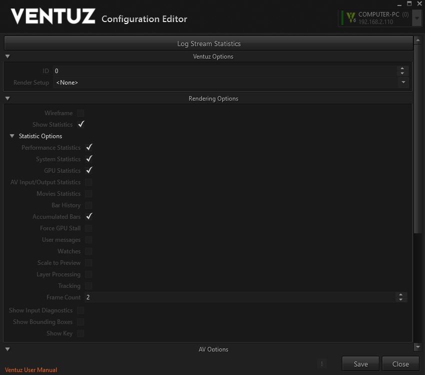
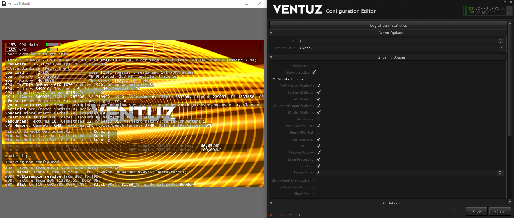
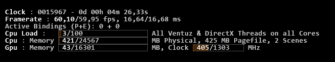
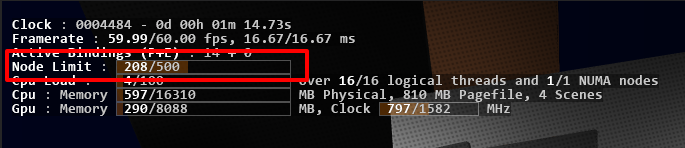
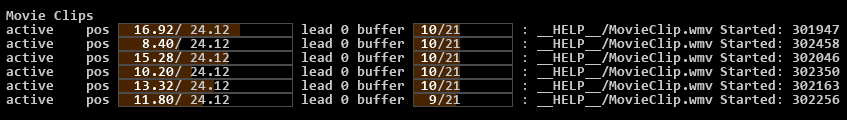
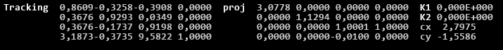

Ventuz Configuration
Table of Contents
- Ventuz Configuration
- Machine Configuration
- Introduction to the Video Engine
- AV Configuration
- Render Setup Editor
- Warping and Soft-Edging
The Ventuz Configuration Editor enables the configuration of a Ventuz system for production. The editor also allows for the administration of multiple configurations and easy switching between them. The Ventuz Configuration Editor can be found in the Windows Start menu, or in the Tools menu of Ventuz Designer.
The editor is capable of configuring and controlling remote systems utilizing the Ventuz Machine Service. In fact, the local system is actually also technically configured by remote access (via localhost)! An installed, started and accessible VMS is mandatory for all systems being configured.
The Ventuz Configuration is project independent and handles and configures all settings related to the Ventuz system. Most of the settings are hardware related but it also contains rendering, network and identification settings. This configuration affects settings of the Ventuz installation and likely needs to be changed whenever the system is used for another project.
Changing the Ventuz Configuration requires a restart of Ventuz is most cases! (except for changing Live Options. See below).
The Ventuz Configuration Editor consists of several sections which are described here:
- Selection of a single Ventuz machine or selection of a group of Ventuz machines (Cluster)
- Editing of Live-Options (only in single machine mode)
- Configuration of the Ventuz Config (Name, ID, GroupID and selection of sub-configurations)
- Edit and administrate Machine Configuration (only in single machine mode)
- Edit and administrate AV Configuration (only in single machine mode)
- Edit and administrate Render Setup (in single and group machine mode)
- Live Project Management (Upload Ventuz project, Start and Stop Ventuz Runtime)
- Log Messages: When clicked, shows the message log window.
- Determines which Layout scene should be loaded. For more information on Layout scenes see here Scene Tree.
All Ventuz configuration files are stored in the system's public documents folder in the Ventuz6\Configuration directory. On most systems this path is:
C:\Users\Public\Documents\Ventuz6\Configuration\
In the Ventuz config folder multiple files and folders are stored. All Ventuz configuration files use the XML format and therefore are human readable and easy to handle.
VentuzConfig.vcfg Ventuz Configuration MachineConfig\*.vmc Machine Configuration Files AVConfig\*.avc AV Configuration Files RendersSetup\*.vmc Render Setup Files Director\*.* Director Configuration Files (not part of the Ventuz Config Editor)
Machine Selection
The Machine Selector shows all machines discovered within the network. The Ventuz Machine Service broadcasts its VMS signature periodically. The Machine Selector receives these messages and add the entries to the selector. Machines without VMS running can't be discovered and configured!
The entry with the green bar on the left marks the local machine. The local machine is the default selection when the Ventuz Configuration Editor is started.
The selector automatically groups all machines with the same GroupID. To select a group click on the group label (here Group 2). Only Render Setups and Project Management are available when a group is selected.
Each entry has a colored Ventuz icon. The color indicates the current state of the running Ventuz process on that particular machine:
| OK | Ventuz is connected and running | |
| INIT | Ventuz is connected and running, though no project is loaded yet | |
 | OFFLINE | Ventuz is not connected |
| TIMEOUT | No VMS discovery message received |
Live Options
Some settings from all configuration areas as well as many settings for the renderer can be adjusted on-the-fly by entering the Live Options on a machine with a running and connected Ventuz Runtime process (green or yellow state). Currently there are three areas that have live options available:
Please note that Live Options can only be saved if the corresponding configuration is not set to (None). The actual values of the settings are injected into the currently loaded file and it will be saved to disk. If there is no configuration file Ventuz can't save it...
Displays
The performance statistics contain a lot of information. In many cases displaying it all can be a bit overwhelming and requires a lot of screen real-estate. So individual sections can be enabled and disabled and with the Frame Count the amount of visible frames can be adjusted:


With all sections enabled, it can look like this:

The display is updated every frame. By pressing the pause key, the update of all sections can be paused.
Here is an explanation of these sections.
Performance
This gives a detailed breakdown of what happens on the main CPU thread and the GPU. If SDI boards or Webcams are in use, it will also display the timing of the Video IO thread.
The percentages are averaged over the last 64 frames. The colored bars show in more detail which part of Ventuz is performing worst. By hovering over the bars, a tool-tip explains what the bars stand for. The vertical white lines represent frames. The display is configured to show two frames, assuming you are most interested in performance when things are bad.
Please note that the performance statistics are about frames, not fields. So when running at 1080i50, expect a framerate of 25Hz, and the bars show information about rendering two fields. This is especially interesting for the video engine, as it does most of its work per frame and not per field.
In general:
- White bars represent the designer user interface. Switch off the monitor buttons in the property and layer view to reduce this.
- Green bars represent rendering (on CPU and GPU)
- Red bars represent validation (on CPU)
- Cyan bars represent resource generators (on CPU mostly)
- Yellow/Orange bars represent layers / post-processing
- Blue bars represent idle time (only displayed when "accumulated bars" is switched off, see below)
- The video engine thread does not follow this color scheme.
By default, bars for two frames are displayed. If the scene runs slower than two frames, the bars are truncated. To display more or less then two frames, the number of frames can be changed with the FrameCount setting in the performance pull-down menu.
History Mode and Pause
To see spikes in performance better, enable the History Mode with the drop-down box. Pressing the pause key on keyboard will pause and continue the update of the bars. When the history mode is on and pause mode is on, use the page-up and page-down keys to scroll. Pressing the control key will scroll faster.

The numbers before the lines are the last three digits of the cluster clock
Interpreting GPU Measurement
When analyzing performance, the first thing to notice is whether it is the CPU or GPU that is limiting Ventuz performance.
Unfortunately, the GPU measurement is sometimes incorrect. Especially when the GPU isn't doing much, it might stall in the middle of the measurement, displaying a high GPU utilization while it is actually doing little. Enable the Stall GPU option: this will negatively effect frame-rate, but correctly tell whether CPU or GPU is the bottleneck.
Accumulated Bars Versus Detailed Timeline

By default, the display uses accumulated bars. When this is disabled, the bars show the exact timing as it happens on the CPU or GPU, and not just accumulated values. Also, one can see the various periods where the CPU is possibly waiting for the GPU (blue "idle" bars). In this mode, one can also see how the bars are stacked: ContentValidation and HierarchyValidation are stacked on top of Validation, which shows the total time including what is stacked on top.
Performance Impact of Measurement
Such detailed performance measurement is not for free, and especially the "Stall GPU" option slows things down. When the performance monitor is completely disabled, or the timing section is disabled, no data is recorded and therefore impact to performance is negligible. You can see the difference by switching the timing section ("Performance" in the menu) on and off while keeping the system information on.
More information about how to interpret this below.
System Information

Clock is the internal cluster-synchronized clock of Ventuz. It counts video frames, or fields when in interlaced mode. This line also shows the Cluster clock converted into seconds, minutes, hours and days. Then follows the Cluster ID of this machine, and the Machine ID from which the clock is taken (in a cluster).
The last few numbers count the frames that were skipped or duplicated because of cluster synchronization, and the reason for the last skipping or duplication.
Framerate is the frame-rate and frame duration, accumulated over the last 64 frames (or fields). Again, in interlaced mode this is the rate of full frames with two fields. It shows the actual measured frame-rate and the expected frame-rate. This information is displayed again, converted into milliseconds.
When tweaking performance, think in milliseconds, not fps. You can easily do math in milliseconds, like 3ms + 7ms = 10ms. You can't do that with FPS. 333fps + 143 fps = 100 fps? That's correct, the same numbers as above, but it just doesn't make sense. Also, getting from 40 fps to 50 fps is 5ms, getting from 50 to 60 is 3.3 ms. Squeezing a millisecond is always the same, a difference in fps is essentially meaningless.
Active Bindings (P+E) shows the number of validated bindings of each frame. The first number shows property bindings and the second one shows event bindings.
CPU Load Tells the total CPU load by the Ventuz process. The Performance Timing bars above only capture the main thread and the video thread. The most important other threads are:
- The DirectX driver usually spawns multiple threads that can not be monitored directly.
- Movie playback creates at least one thread per Movie, and may be many more if the codec supports multi-threading (which it usually does).
The Scenes count behind the CPU Load simply indicates how many scenes are currently loaded into memory.
CPU Memory shows the percentage of physical memory Ventuz takes up, and how much memory is swapped on disk. The values come directly from the operating system, so they include memory that is allocated indirectly, for instance by DirectX.
GPU Memory shows the percentage of GPU memory Ventuz uses. The values are counted manually by Ventuz whenever it creates or destroys a resource. Since the driver may have some overhead that is not knowable to Ventuz, the actual amount of GPU memory used may be larger.
For instance, the driver may need to round up the width of a texture to the next power of two, so a 640 pixel wide texture gets rounded to 1024, a substantial difference. Ventuz can not know this and reports the incorrect amount. The Clock shows the current core frequency as well as the base frequency.
Note that the GPU Cloclk field shows the frequency of the core not that of the memory. It can go beyond 100% when overclocking the GPU.
Further information on the GPU can be found as well: The manufacturer as well as the model name, its core number and its core group granularity is diplayed right below the memory usage bars.
GPU: Indices is the number of Vertices drawn ignoring reuse. Each triangle contributes 3 indices, each line only 2. DrawCalls are the number of times something is drawn. With font rendering, multiple draw calls can be combined to a batch. The number of Batches is the most important indicator on how much time is spend in the graphics driver. Another trick used by font rendering to reduce the number of batches is Instancing.
Node Limit
In the Community Edition of Ventuz you will find an additional Node Limit in this list. It indicates the currently rendered Primary Nodes and their maximum allowed number.

GPU Information
 Gfx-State: Each material is represented as a gfx-state when it is actually drawn. Each frame the states are set and possibly need an update. Updating is especially expensive if the shader-signature has changed and the exact shader variant has to be determined. this gets even more expensive if the shader is new and needs to be compiled. You should make sure your Signature values are near 0 and Compiles are always 0.
Gfx-State: Each material is represented as a gfx-state when it is actually drawn. Each frame the states are set and possibly need an update. Updating is especially expensive if the shader-signature has changed and the exact shader variant has to be determined. this gets even more expensive if the shader is new and needs to be compiled. You should make sure your Signature values are near 0 and Compiles are always 0.
Dynamic Geometry: Ventuz will do some FastUploads for interal purposes. When a geometry is animated by binding it, this will issue a SlowUpload when a value changes. How slow such an update is depends on how complex the vertex format is: Most vertex formats will undergo no conversion or a QuickVertexConvert. Sometimes a SlowVertexConvert has to be done, this should be avoided on animated geometries.
Creation Calls are an exceptionally expensive part of the DirectX API and should only happen during scene loading.
Persistent Resources are resources that accumulate and are never deleted until Ventuz is quit. VertexFormats and VertexConverters are cheap internal resources that should stay below 25. Shaders is the number of different shaders that have been used since Ventuz started.
GPU Memory: this shows how GPU memory is divided into geometry (vertex and index buffers), textures and Color/Depth Target (textures used as rendertarget or depth buffer).
AV Inputs / Outputs

This is a list of all Audio and Video Devices and their states.
The states mean:
- Ready: input stream waiting for a signal
- PreSync: first phase of syncing a stream
- Syncing: stream has found a signal and is synchronizing to that signal
- Disabled: stream is temporarily disabled, but uses up resources and can get running immediately.
- Running: stream is running
- Bypass: stream is in bypass mode because of hardware-watchdog
- Error : stream is disabled and uses up no resources. Either because the stream failed somehow or the stream was disabled in the Live Video node, or the stream is not needed by the Ventuz scene.
The bar shows how many buffers are allocated and if they are full. This is only shown when Ventuz manually manages buffers, like for SDI streams. For an output stream, the buffers should be as full as possible, and when Ventuz is too slow the buffers are drained, a drop is only visible when the queue gets empty. For input streams, the buffers should be as empty as possible, when Ventuz is too slow the queue fills up so that Ventuz can process the images later on. Input frames are only dropped if the queue overflows.
Next is a list of audio cross-points. It shows the amount of delay that is associated with the cross-point. Delay is needed for windows audio devices or asynchronous inputs.
Movies

For each enabled movie related node, this shows information about the movie. This is especially important since most of the CPU load done by movies is not captured in the performance timing bars.
For each movie, the state, position, lead, buffering and file-name is shown.
The states are:
- error: the stream failed
- busy: Internal operation
- empty: No file was loaded
- loadmeta: loading metadata
- loadinfo: prepare playback
- active: normal playback
- pause: playback is paused
- seek: seeking
- waitstream: for Movie Stream nodes, waiting for a stream to receive
When multiple scenes are load into Ventuz, all the inactive scenes have still their audio player initalized. This may waste lots of GPU and CPU memory for the frame-buffers. Movies from inactive scenes have gray text instead of white. Ventuz will automatically take care to put movie clips from inactive scenes into pause mode, so that at least no effort is wasted in decoding frames that are never displayed.
The lead works like this: When the clip is not in async mode, and Ventuz runs in a cluster, it can happen that seeking to a position is not good enough because when the seek is complete, time has passed and the video is already too late. To avoid this problem, always pause the video, seek, wait a bit and then un-pause. If this is not done, Ventuz will notice the problem and automatically seek to a position slightly in the future, like when shooting skeet. A lead of 0 means no problem, 1 means that Ventuz considers leading but hasn't done it already, and higher numbers indicate increasing amounts of lead-time.
The buffers show how many buffers Ventuz has allocated and how many frames in the future are available. If these buffers run dry, increase the number of buffers for that movie. At the end of each line you can see the exact Cluster Clock when each Movie Started. Like the lead this is mainly useful to check syncronization of movies in a cluster.
In the Ventuz Designer, one can jump directly to a movie node by right-clicking on the name of a movie. A message is displayed to hint this:

Here the top movie is in an inactive scene (therefore it is displayed in gray, by right-clicking on it one can see where the node is hidden.
Tracking
- add offset matrix that occurs with touch teleport node
When a camera tracking system is used, debug information can be shown. Ventuz will display the view and projection matrix, plus the K1 and K2 values and lens center shift in x and y for the lens distortion, all received from the tracking system.

Layer Processing
The layer engine will magically convert your layering into an optimized set of shaders. Each shader call can blend up to 8 layers together, if conditions are right.
To check how well the engine does in combining effects into single shaders, you can look ad the layer processing.
Each line represents:
- rendering a scene
- doing a multisample resolve after rendering a scene, if multisampling is enabled. This converts the multisampled rendertarget into a single-sampled texture that can be used by a shader.
- making a texture available for layer-blending (this is for free)
- doing a blit, using a shader.
- nop, no operation, a leftover from merging two blits together.

The log will reference textures and rendertargets with !#00, where 00 is replaced by a number assigned to the texture / rendertarget. Blits reference their sources by referencing to other lines in the log, using the notation @000. In the example you can see how a scene is rendered to color buffer !#06 and depth buffer !#07, then the color buffer is resolved to !#08 and the whole thing is referenced as line @003 in the first blit.
Some effect will create only a small shader snipped in one of the blits, like the grayscale and the color correct effect. Other effects, like the blur, will create multiple shaders, even changing depending on parameters. In the example above, the two downsample and the two blur blits are generated by a blur effect
Layer Blending will create Blend.XXXX blits, with XXXX being the blend-mode. The last blit line shows how multiple blends and other effects are merged into a single blit, the two nops being leftovers from the merge process.
As a rule of thumb: the less blits the better, and everything with blur in the name and the downsample box are especially expensive.
Watches
The watches show all currently watched properties in the scene tree. For more information see the Watches Editor page.
Ventuz Options
The ID and the currently used Render Setup can be changed live. Changing these values doesn't affect the saved Ventuz Configuration as long the Live Options have not been saved.
Rendering Options
These options change some renderer-specific settings. The same options are also available in the Renderer Windows in Ventuz Designer.
Please note that the Rendering Options cannot be saved! After a restart of Ventuz all options fall back to their default values.
AV Options
Some board and audio and video stream have settings that only can reasonably adjusted while Ventuz is running (Genlock delay, audio gains and delays, etc). The live AV options make all settings available that are changeable on-the-fly. Saving the AV part of the Live Options will overwrite the current AV Configuration File. If no configuration has been set (None) the live edited values cannot be saved!
Ventuz Config
The Ventuz Configuration contains general information about the Ventuz Machine. If defines the Name of the machine as well its numeric ID and GroupID. The ID is used to select the correct part to be rendered in the multi-machine Render Setup. The GroupID must be set to a value greater than zero if a machine is part of a Cluster (group). Only machines with a GroupID can interchange their timing (cluster clock) to synchronize Remoting, animation and movie playback. For proper synchronization a valid Cluster Option is required. The Name of a machine is technically not important. A proper name helps the user to identify a machine within a Ventuz network.
The Machine Tag is used by the Runtime to determine the Scene that is to be used.
The Ventuz Configuration also defines which sub-configuration should be used for the three sub-sections: Machine Configuration, AV Configuration and Render Setup. The corresponding selection boxes (3a, 3b and 3c) allows the user to switch between the existing configurations. Changing a value here requires the Ventuz Configuration to be saved. This can be done by pressing the Save button.
Each of the three sub-configuration has an Administration Area. This is shown if the expander left of the selection box is clicked.
The Administration Area shows a list of all available configurations where the checked entry marks the currently active file.
Several action can be performed on the selected entries:
| Edit selected entry | Create new entry | ||
| Duplicates selected entry | Renames selected entry | ||
| Deletes selected entry | |||
| Imports a file | Exports selected entry |
The Edit and New buttons are also available in the compact view of each sub-configuration section though the shown entry is the check and selected one at the same time. (always the active configuration is edited)
Editing an entry switches to the corresponding sub-configuration editor. Each sub-editor has its own Save and Cancel buttons. These buttons affect only the current sub-configuration being edited. The Save button on the Ventuz Configuration page only affects the settings of the Ventuz Configuration which references the sub-configurations by name.
Importing and Exporting is just a simple way to copy the actual configuration files from/to the configuration folder. If a remote system or group of machines is configured this feature becomes very helpful!
Project Management
The Live Project Management allows a project found on the target system to be selected and Ventuz Runtime to be started with the selection. The simple view can also be expanded to show more options:
The displayed list shows all projects found by VMS on the target system. If the user hovers the mouse over one entry a tooltip popup shows more details about the project. The project files must be stored in the project folder configured in VMS. The default folder is
C:\Users\Public\Documents\Ventuz6\Projects
Please note that only unique projects are displayed in that list. If a project with the same ID appears multiple times on a system or - in multi machine mode - a project ID doesn't exist on one or more system it won't be displayed!
In expanded mode the Live Project Management can perform several actions:
| Start the selected project. Any previously running Ventuz Runtime will be closed before! | |
| Stop (kill) any currently running Ventuz Runtime. | |
| Upload a Ventuz Project (VPA or VPR) to all selected machines and initiate a re-scan on VMS. | |
| Initiate a project scan on all selected target machines. |
Before starting or stopping and Ventuz Runtime processes make absolutely sure that you're connected to the correct machines! To disallow closing processes accidentally you can set security settings on the VMS.